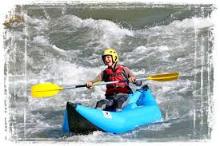

Founded with a love for the sea and a passion for adventure, Kayak La Paz Adventures was born on the tranquil
shores of the Baja California peninsula. Our journey began when a group of friends—lifelong residents of La
Paz and ocean enthusiasts—decided to share the beauty of the Sea of Cortez with the world.
We started with just a few kayaks and a dream: to offer authentic, eco-friendly adventures that connect
people to the stunning nature that surrounds our hometown.

Over the years, we’ve grown into one of the most
trusted kayak tour companies in La Paz, known for our knowledgeable local guides, personalized experiences,
and deep respect for the marine environment.
Whether you're paddling with us through quiet mangroves, spotting sea lions near Espíritu Santo Island, or
watching the sunset from your kayak, our goal is to make every moment unforgettable. At Kayak La Paz
Adventures, we don’t just guide tours—we create memories.